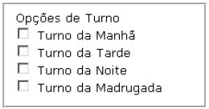

Recomendação 2.15 - Usar o elemento “label” juntamente com o atributo “id” para associar os rótulos aos respectivos controles dos formulários. Assim, os leitores de tela associarão os elementos do formulário de forma correta. Usando o comando “label” as pessoas que usam leitores de tela não terão problemas ao ler o formulário. Caso haja grupos de informação, controles, etc, a estes devem estar devidamente diferenciados, seja por meio de espaçamento, localização ou elementos gráficos.
Em uma aplicação, os rótulos dos campos são posicionados, consistentemente, à esquerda do campo mostrado, os rótulos dos ícones posicionados abaixo do ícone mostrado e rótulos para botões de rádio são posicionados, consistentemente, à direita.
Nota: Atenção especial deve ser dispensada na diferenciação visual entre rótulo e informação colocados próximos uns dos outros.

No código html:
Caso o formulário seja em duas colunas, os rótulos de tamanhos significativamente diferentes devem estar alinhados à direita com os campos alinhados à esquerda, em todos os formulários do sistema.